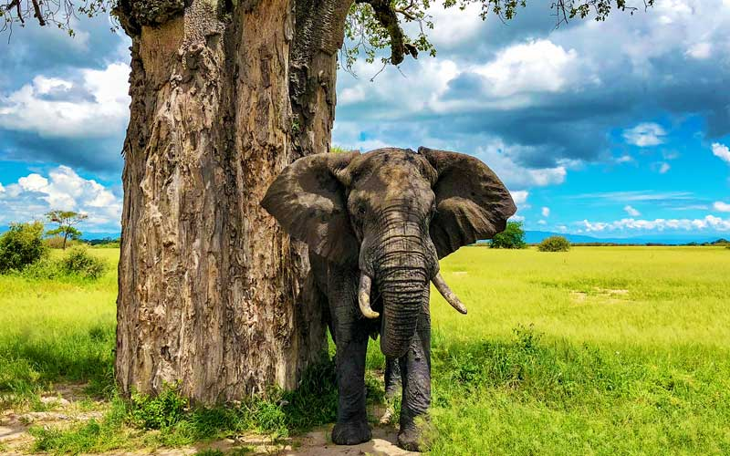

The Elephant Defense: Anti-Poaching In Tarangire

Reviewing the structural tactical changes and remote sensory arrays safeguarding maternal herd tracking blocks.
Tarangire National Park serves as a critical biological sanctuary for Tanzania's largest concentration of African elephants. To mitigate heavy poaching threats across extensive borders, rangers have shifted from passive patrolling to an integrated, tech-forward defense architecture. This grid combines active field enforcement with an invisible network of automated monitoring endpoints.
01 / Remote Sensory Arrays
The frontline defense relies heavily on acoustic sensors and seismic nodes hidden along migratory corridors. These units isolate high-frequency sound waves from ballistics and match them against baseline environmental metrics. When a threat signatures trigger, GPS coordinates pipe directly to regional quick-response teams to intercept poachers before they reach maternal herd clusters.
02 / Matriarchal Tracking Loops
By deploying satellite-linked telemetry collars on key herd matriarchs, conservationists analyze anomalous velocity shifts in real-time. Sudden spikes in velocity indicate herd distress or flight maneuvers. These algorithmic tracking loops allow rangers to map high-risk perimeter sectors and position tactical units precisely where territorial friction escalates.